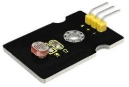

Sensor de luz LDR.

El LDR es una resistencia que varia con la luz. La conexión interna de este sensor analógico hace que cuanto más luz menos valor nos proporciona por lo tanto va al revés. Esto será importante para la confifuración de nuestros proramas, por ejemplo el medidor "Gauge" de la APP Blink de este vídeo va de 1023 a 0 para medir correctamente la cantidad de luz:

Rover Arduino por Ver créditos bajo licencia Creative Commons Reconocimiento-NoComercial-CompartirIgual 4.0 Internacional License.